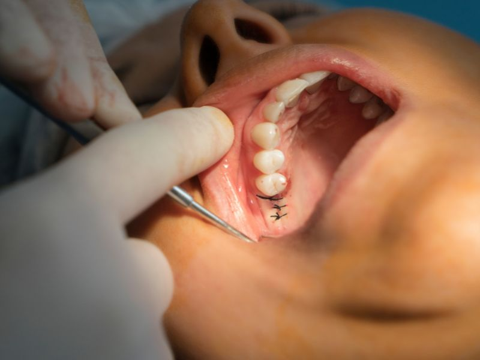

01
Terceros molares
Evaluación de posición, síntomas y necesidad de extracción de muelas del juicio.
Procedimientos quirúrgicos odontológicos planificados con evaluación previa, información clara y seguimiento posterior.

La cirugía oral aborda extracciones y otros procedimientos que requieren un enfoque quirúrgico. Antes de indicar una intervención se revisa el motivo, antecedentes, imágenes disponibles y alternativas de tratamiento.
Evaluación de posición, síntomas y necesidad de extracción de muelas del juicio.
Procedimientos indicados cuando una extracción convencional requiere abordaje quirúrgico.
Intervenciones odontológicas localizadas según diagnóstico y planificación profesional.
Seguimiento de cicatrización, indicaciones y resolución de dudas durante la recuperación.
Agenda una consulta para revisar tu caso y conocer si realmente necesitas una cirugía y cómo se planificaría.
Todo procedimiento quirúrgico requiere evaluación profesional previa.